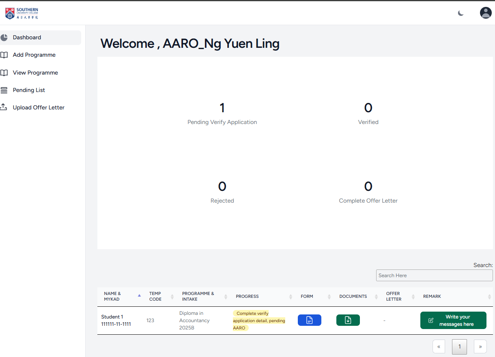
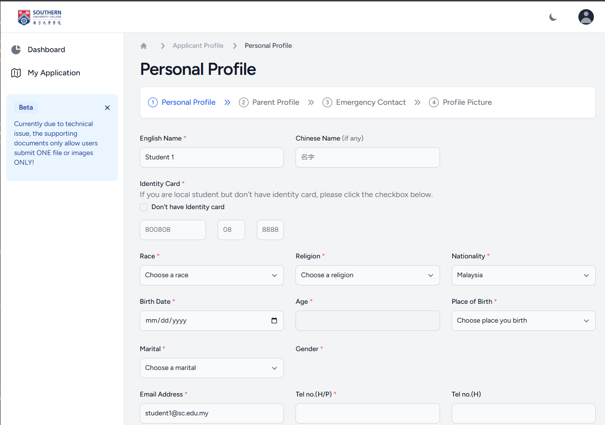
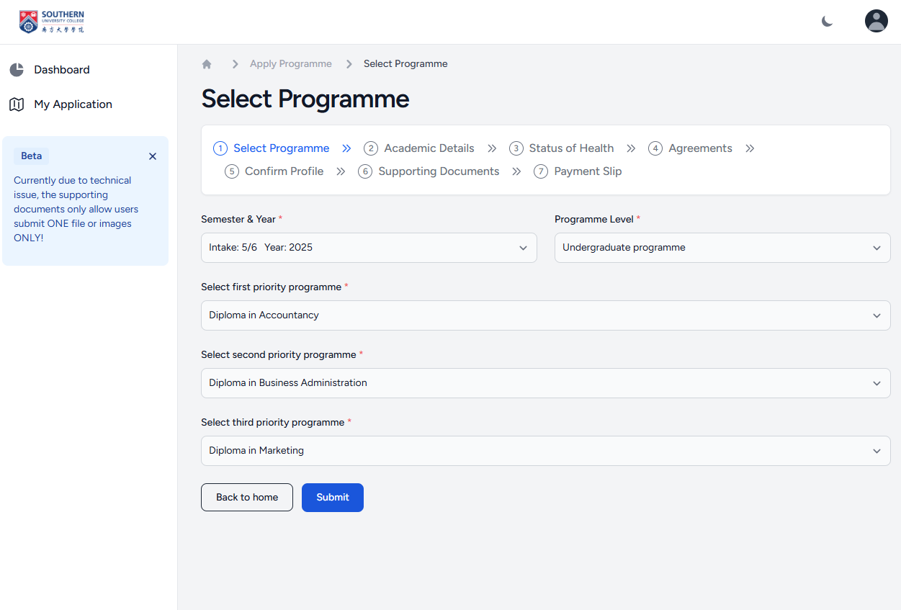
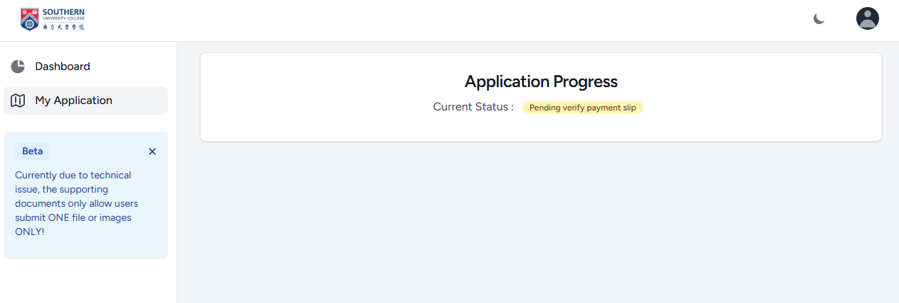
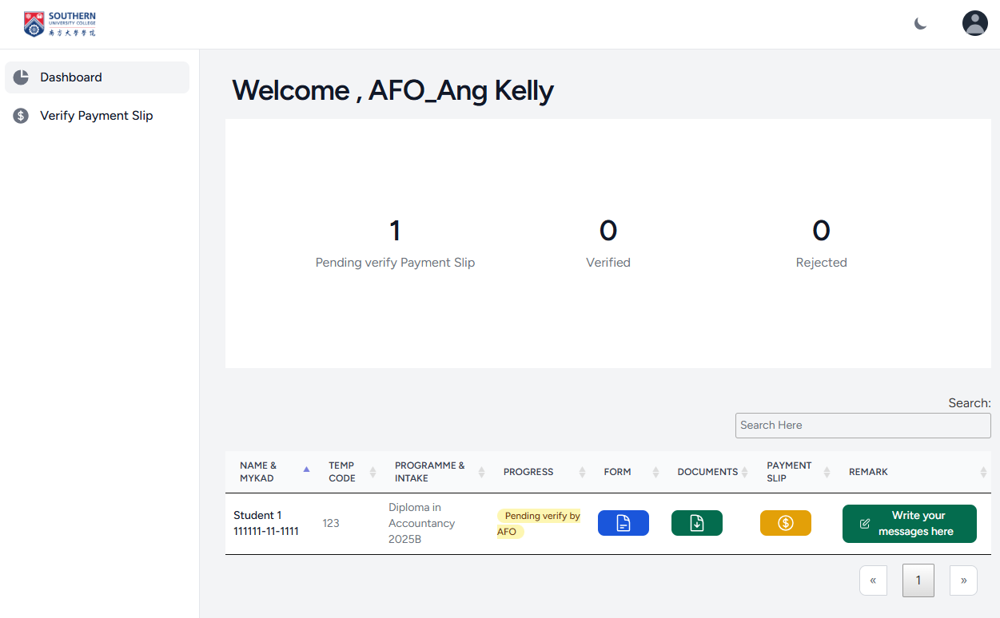
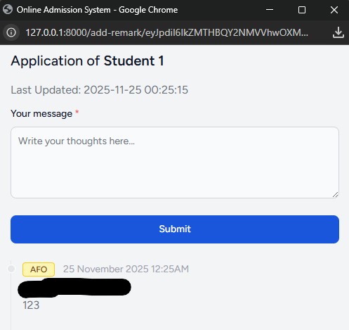
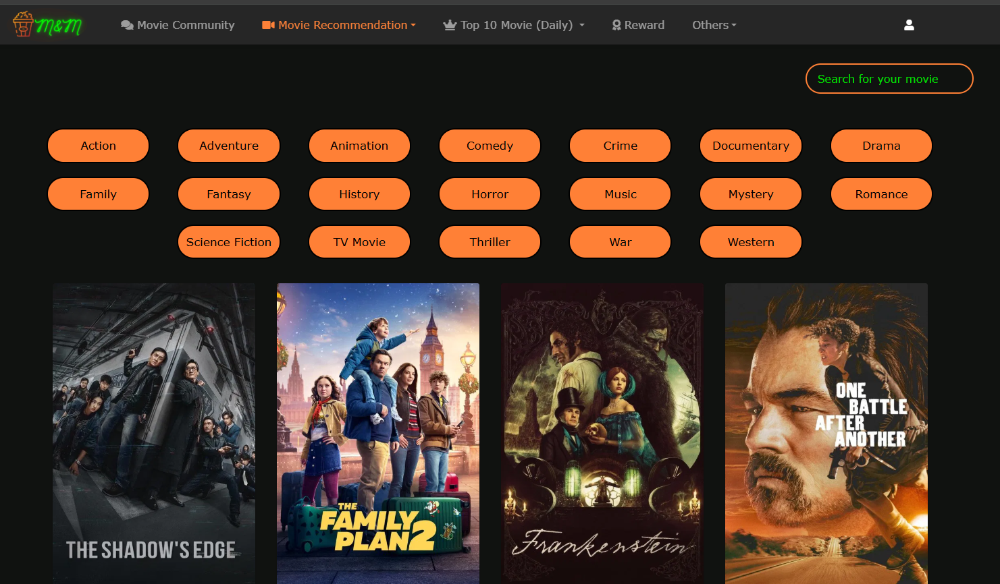
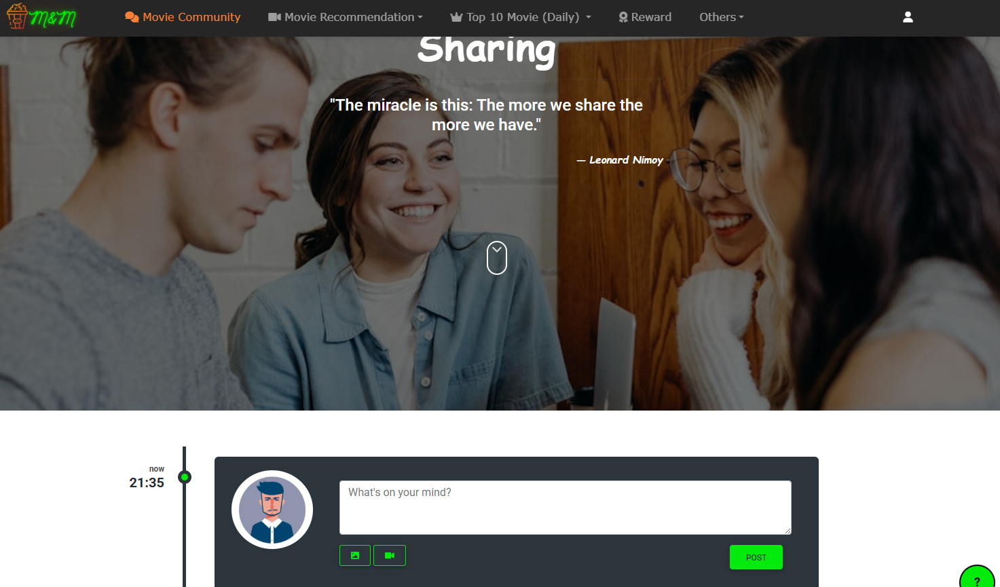
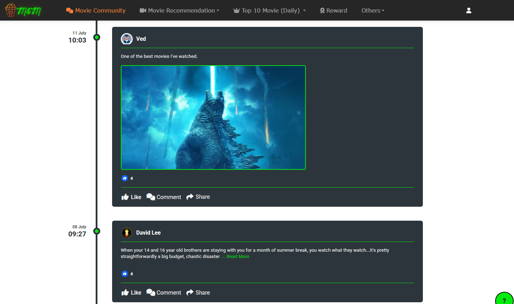
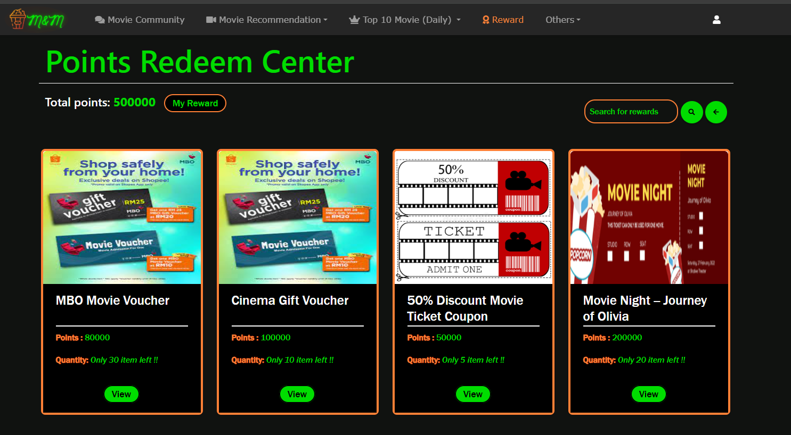

Bachelor of Software Engineering
Southern University College
CGPA 3.66SOFTWARE ENGINEER / JOHOR BAHRU, MALAYSIA
I design, build, and support software across web, mobile, and business systems. Here is a selection of the work I have contributed to.

OPEN PROJECT GALLERY ↗01 / ABOUT
I’m Teh Jun Yuan, a Software Engineer based in Johor Bahru, Malaysia.
I enjoy understanding how people work, finding where processes get complicated, and building software that makes those processes easier. My experience spans manufacturing, trading, and education, from a user’s first screen to backend integrations and production support.
EDUCATION & CONTINUOUS LEARNING
Southern University College
CGPA 3.66Southern University College
CGPA 3.44Certifications
02 / PROJECTS
Software developed for manufacturing, trading, higher education, and personal projects.
System components and integrations described in the project summary.
01 MANUFACTURING & TRADING
Develop and support in-house ERP software at TSH Manufacturing Solutions, including supplier workflows, document processing, accounting integrations, and mobile applications.
Professional work · Source code is private
 View screenshots
View screenshots 02 EDUCATION / WEB APPLICATION
A Laravel application for programme applications and student enrolment, with responsive student pages and Filament dashboards for university departments.
Explore project details




 View screenshots
View screenshots 03 DIPLOMA / FINAL YEAR PROJECT
A movie discovery and community platform with recommendations, discussions, and a reward system. An exploration of full stack product development with Laravel.
View source on GitHub



DEGREE / FINAL YEAR PROJECT
An AI image processing platform exploring restoration, recoloring, object removal, and generative fill.
03 / EXPERIENCE
Development, integration, deployment, and support across business and education environments.
Download full resumeDevelop and support in-house ERP systems, supplier workflows, automation, AI/OCR document processing, and AutoCount integrations. Build and release Flutter applications for the App Store and Google Play.
Improved ERP dashboards with HighCharts and TypeScript, and enhanced the usability of the Bill of Materials module in Serenity.
Built admission workflows and admin dashboards with Laravel and Filament. Deployed on IIS / Windows Server, documented the system, trained staff, and maintained the university’s WordPress website.
Contributed to the admission system’s frontend and UI improvements, collaborating with the team through Jira and GitHub.
04 / TOOLKIT
Languages, frameworks, databases, and tools used across my projects and professional work.